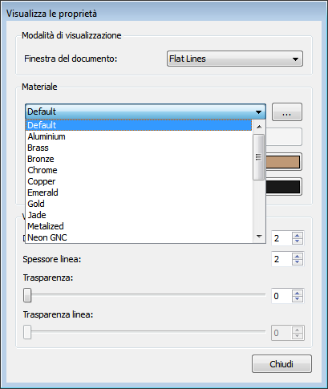

This documentation is not finished. Please help and contribute documentation.
See Draft ShapeString for good documented Command. Gui Command gives an overview over commands. And see List of Commands for other commands.
Go to Help FreeCAD to contribute.
|
| Posizione nel menu |
|---|
| Visualizza → Aspetto |
| Ambiente |
| Tutti |
| Avvio veloce |
| Ctrl+D |
| Vedere anche |
| Imposta colori |
Contents |
Questa funzione serve a impostare l'aspetto e in particolare a definire il materiale dell'oggetto.
Utilizzo
- Selezionare un oggetto,
- avviare la funzione dal menu principale con Visualizza → Aspetto, oppure con il tasto Menu contestuale, oppure cliccandovi sopra con il destro nell'albero del documento.
Appare la scheda Visualizza le proprietà:
{kind=link}
|  |
Alcune proprietà indicate in Visualizza le proprietà sono presenti anche nella scheda Vista. |
{kind=link}
|
Inoltre, cliccando sui ... della voce Materiale si apre la scheda Proprietà del materiale per personalizzare i materiali. Le impostazioni modificate tramite queste schede si trasferiscono anche nella scheda Vista. |
{kind=link}
Per modificare i colori delle singole facce di un solido vedere il comando Imposta colori